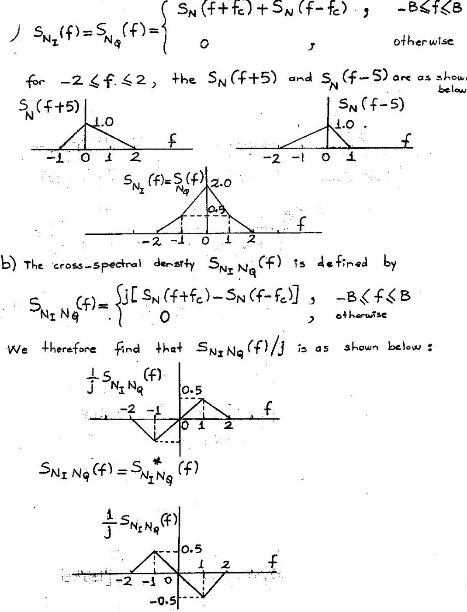
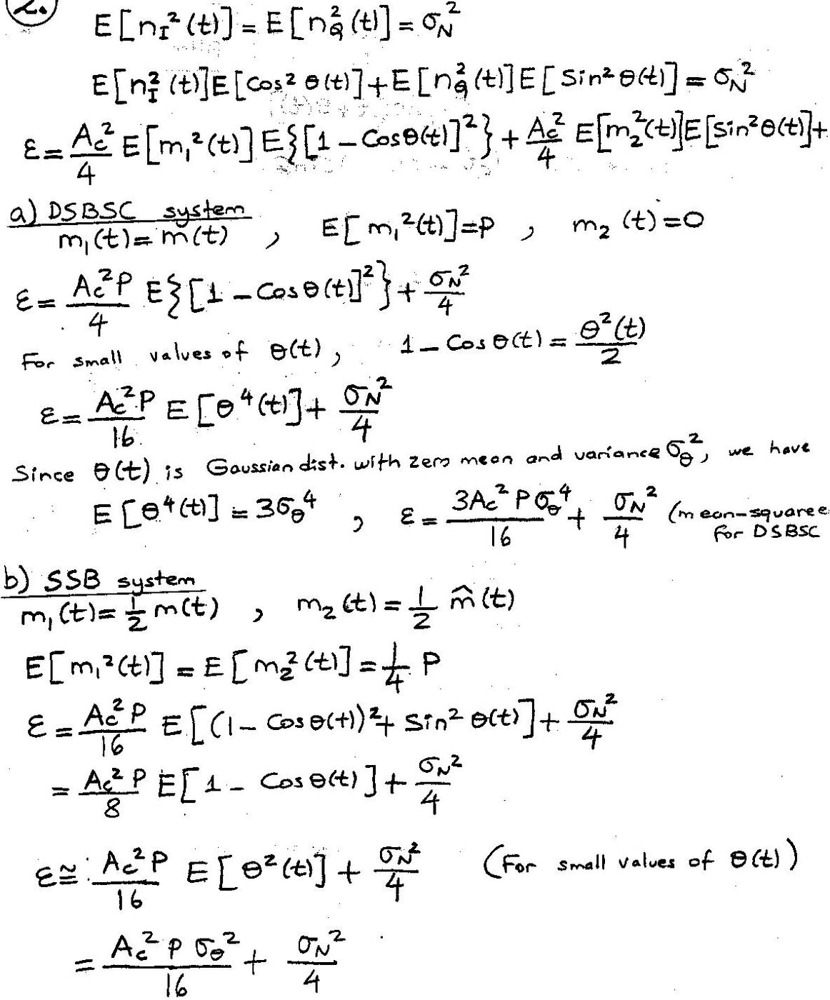
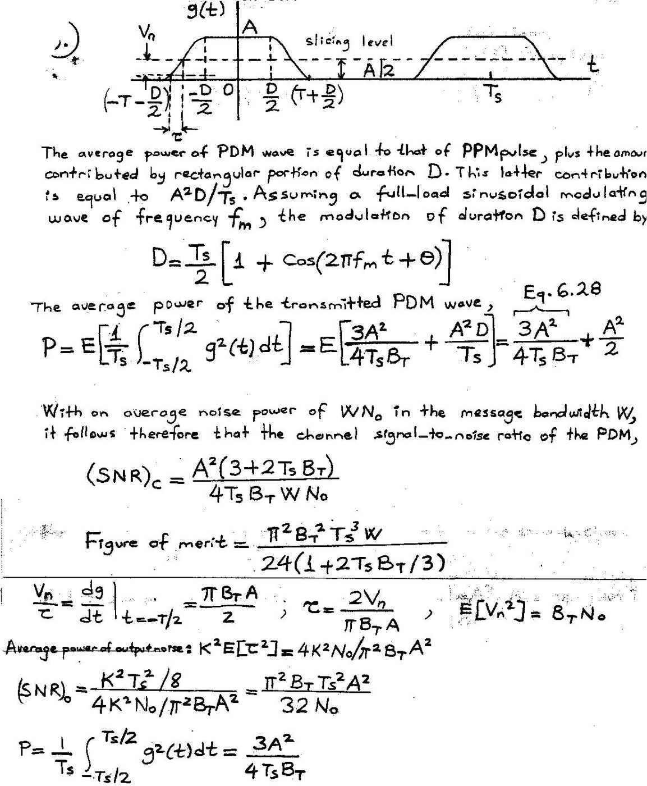
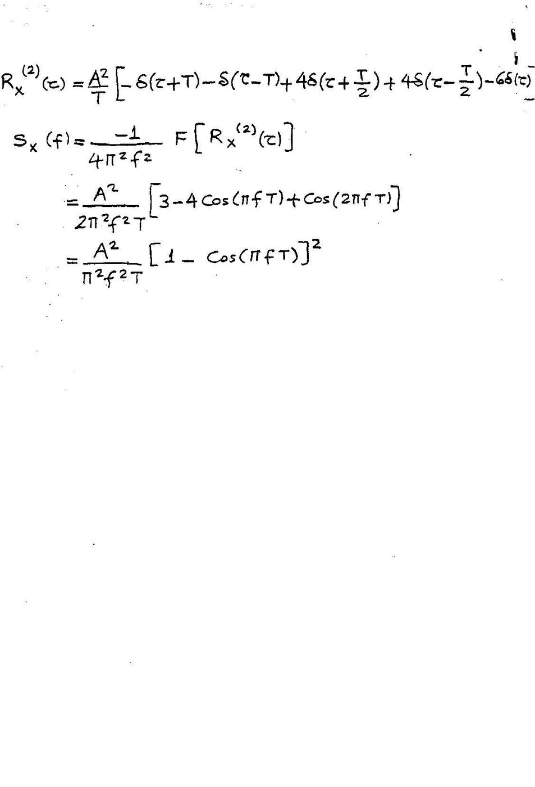

· EEM441
EEM441 Haberleşme I: 4 Haziran 2001 EEM442 final sınavı ve çözümleri (EEM442 sınavı)
EEM441 – Haberleşme I · 04.06.2001 · 14.11.2026
Başkent Üniversitesi Elektrik-Elektronik Mühendisliği Bölümü'nün 4 Haziran 2001 tarihli, 120 dakikalık EEM 442 "Communication Systems II" final sınavı. Bu sınav Haberleşme II (EEM 442) dersine aittir; Haberleşme I klasöründe bulunduğu için burada, Haberleşme I altında yayımlanmıştır. Sınav (iki sayfa) ve altı sayfa el yazısı çözüm İngilizcedir; dördüncü sorunun (b) şıkkı çözüm sayfalarında tamamlanmıştır, 3. sorunun (c) şıkkı (PPM ile karşılaştırma) çözüm sayfalarında yer almamaktadır. Orijinal sınav sayfaları ve el yazısı çözümler yazının sonundaki PDF olarak indirilebilir.
Soru 1: Dar bant gürültünün dik bileşenleri
Dar bant gürültü n(t)'nin güç spektral yoğunluğu şekildeki gibi: taşıyıcı frekansı 5 Hz, S_N(f) = 1,0 tepeli, 4–7 Hz arası ve −7…−4 Hz arası üçgenler (tepe 5 Hz'de). (a) Dik (in-phase) ve karesel bileşenlerin güç spektral yoğunluklarını, (b) çapraz spektral yoğunluklarını bulun.
Çözüm. −B ≤ f ≤ B aralığında S_NI(f) = S_NQ(f) = S_N(f + f_c) + S_N(f − f_c). −2…2 Hz için iki kaydırılmış üçgen toplanır: f = 0'da 2,0, ±1 Hz'de 0,5, ±2 Hz'de 0 olan kırık çizgili bir spektrum elde edilir. Çapraz spektral yoğunluk S_NINQ(f) = j[S_N(f + f_c) − S_N(f − f_c)] ile bulunur; f ≥ 0 için tepesi 1 Hz'de 0,5j olan, f ≤ 0 için bunun işaret değiştirmiş biçimi olan tek simetrili bir eğri verir (S_NINQ(f) = S*_NINQ(f)).

Soru 2: Evre hatalı uyumlu demodülasyon
Uyumlu demodülatörde yerel osilatör cos(2πf_ct)'ye göre θ(t) evre hatası taşıyor; θ(t) sıfır ortalamalı, varyansı σ_θ² olan Gaussian bir süreç ve çoğu zaman |θ| ≪ 1. Alıcı çıkışının ortalama kare hatasını (a) DSB-SC ve (b) SSB için bulun (hata: alıcı çıkışı ile mesaj bileşeni arasındaki farkın karesinin beklenen değeri).
Çözüm. s(t) = A_c[m₁(t)cos 2πf_ct − m₂(t)sin 2πf_ct] biçiminde, DSB-SC için m₁ = m, m₂ = 0; üst yan bant SSB için m₁ = ½m, m₂ = ½m̂. Karıştırıcı ve alçak geçiren süzgeç çıkışı
y(t) = ½[A_cm₁ + n_c]cos θ + ½[A_cm₂ + n_s]sin θ
olur; hata e = y − (A_c/2)m₁. Küçük θ için 1 − cos θ ≈ θ²/2 kullanılarak:
- (a) DSB-SC: ε = (3A_c²Pσ_θ⁴)/16 + σ_N²/4. (E[θ⁴] = 3σ_θ⁴; P mesaj gücü.)
- (b) SSB: ε ≈ (A_c²Pσ_θ²)/16 + σ_N²/4.
Yani DSB-SC'de hata evre varyansının karesiyle, SSB'de ise varyansın kendisiyle orantılıdır.

Soru 3: PDM
PDM darbesi, süresi D olan dikdörtgen bir darbenin önünde ve arkasında PPM darbesinin yarılarıyla aynı eğimli kısımlardan oluşur; alıcıda kesme seviyesi tepe genliğinin yarısıdır. Kenar algılama zamanındaki küçük τ kayması dışında tüm gürültü etkisi giderilir ve kenarlardan biri gürültüsüz bir referansla sabitlenmiştir. (a) PDM'nin çıkış SNR'sini, (b) kanal SNR'sini bulun. (c) Kalite faktörünü PPM ile karşılaştırın.
Çözüm. Tam yüklü sinüzoidal modülasyon için D = (T_s/2)[1 + cos(2πf_mt + θ)]. PDM'nin ortalama gücü PPM'nin gücüne dikdörtgen kısmın A²D/T_s katkısını ekler: P = 3A²/(4T_sB_T) + A²/2. Kanal SNR'si (SNR)_c = A²(3 + 2T_sB_T)/(4T_sB_TWN₀). Çıkış SNR'si (SNR)₀ = π²B_TT_s²A²/(32N₀). Kalite faktörü
π²B_T²T_s³W / [24(1 + 2T_sB_T/3)].

Soru 4: PCM güç spektral yoğunluğu
1'ler ve 0'lar eşit olasılıklı ve komşu zaman aralıkları istatistiksel bağımsız olduğuna göre PCM dalgasının güç spektral yoğunluğunu (a) aç-kapa (on-off) işaretleme ve (b) Manchester kodu için bulup çizin.
Çözüm. (a) On-off işaretleme, 1'i A volt, 0'ı sıfır volt gösteren rastgele ikili dalgadır:
S_x(f) = (A²/4)δ(f) + (A²T/4)sinc²(fT).
(b) Manchester kodunda 1, +A ile başlayan çift darbe, 0 ise −A ile başlayan çift darbedir; dalganın ortalaması sıfırdır. |τ| > T için R_x(τ) = 0; T/2 < |τ| ≤ T için R_x(τ) = −A²(1 − |τ|/T); |τ| ≤ T/2 için R_x(τ) = A²(1 − 3|τ|/T). R_x'in ikinci türevi dürtülerden oluşur:
R_x⁽²⁾(τ) = (A²/T)[−δ(τ+T) − δ(τ−T) + 4δ(τ+T/2) + 4δ(τ−T/2) − 6δ(τ)]
ve S_x(f) = −F[R_x⁽²⁾]/(4π²f²) alınarak
S_x(f) = A²/(π²f²T)·[1 − cos(πfT)]²
bulunur. Spektrum f = 0'da sıfırdır (DC içermez).

